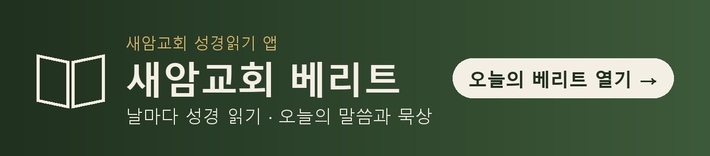

마르지 않는 샘처럼, 말씀으로 사람을 살리는 교회. 경기도 용인시 수지구 동천동, 고기로 165에 있습니다. 처음 오시는 분도 주일 오전 9시(1부)나 11시(2부) 예배에 편히 오세요.

새암교회는 AI를 맹신하지도 배척하지도 않습니다. 말씀은 사람이 기도하며 준비하고, AI와 디지털 도구는 그 말씀을 더 많은 사람에게, 더 날마다 닿게 하는 데 씁니다.
연혁 출처: 디지털용인문화대전 「새암교회」
경기도 용인시 수지구 동천동, 고기로 165에 있습니다. 전화는 031-262-3440입니다.
대한예수교장로회(합동) 소속 교회입니다.
주일예배는 1부 오전 9시, 2부 오전 11시이고, 새벽기도회는 매일 오전 6시, 금요기도회는 금요일 오후 8시 30분입니다.
이재선 목사입니다. 강단에서 전한 설교 1,300여 편과 주제별 예화, 독후감, 시를 홈페이지 「독서주특기」에 나누고 있습니다.
1970년 5월 3일 용인군 구성면 보정리에서 예배를 시작했습니다. 2002년 실로암교회와 새창교회가 하나가 되며 새암교회라는 이름을 갖게 되었습니다(디지털용인문화대전).
AI를 맹신하지도 배척하지도 않고, 말씀을 더 잘 전하는 도구로 씁니다. 설교 예화를 AI의 도움으로 다듬되 담임목사가 사실과 출처를 확인하고, 성경 본문을 AI 음악 도구로 찬양으로 만들어 유튜브 「어음성경」에 나눕니다.
유튜브 「[새암교회]비전센터」(youtube.com/@seamvision)에서 교회 영상을 볼 수 있고, 네이버 카페 「용인새암교회」(cafe.naver.com/onreseam)에서 소식을 나누며, 성경 읽기 앱 「베리트」(berith365.com)와 유튜브 「베리트365」(youtube.com/@berith365)로 날마다 말씀을 읽고 묵상할 수 있습니다.
주일 오전 9시(1부)나 11시(2부) 예배에 오시면 됩니다. 궁금한 점은 교회 전화 031-262-3440로 물어보세요.
이 쪽은 새암교회 담임목사 이재선 목사의 홈페이지 「독서주특기」에서 운영합니다. 블로그 saechang888.blogspot.com · 유튜브 「어음성경」